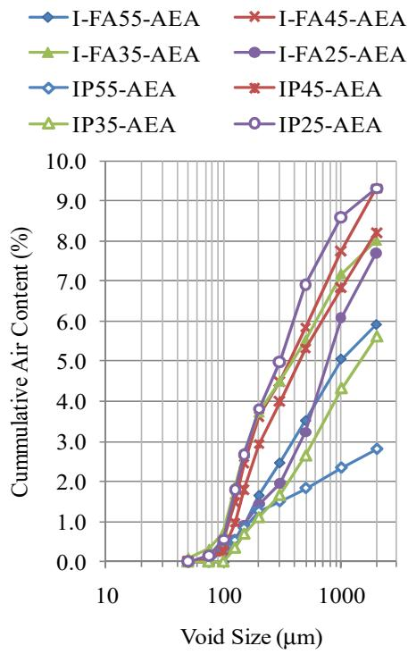

Cement Hydration
Cement hydration is the exothermic chemical reaction that occurs when water contacts cement particles, initiating a series of transformations that produce solid binding phases and release thermal energy. This process converts a fluid mixture into a hardened matrix by forming calcium-silicate-hydrate gel and other crystalline compounds that interlock to bind aggregates, thereby developing the material’s strength and stiffness [1] [2] [3] [4]. The reaction proceeds through distinct kinetic stages, including an initial rapid heat evolution, a dormant period, and subsequent acceleration and deceleration phases that govern setting time and early-age performance [5] [6]. The rate and extent of hydration are strongly influenced by factors such as cement chemistry, fineness, mix proportions, admixtures, and curing temperature, with higher temperatures generally accelerating the reaction [7] [2] [8] [6]. Adequate moisture is essential for the continuation of these reactions, as insufficient water limits the degree of reaction and can halt progress, while the released heat creates a characteristic temperature-time profile that serves as an indicator of hydration kinetics [2] [8] [9] [10].
CP Tech Center reports covering “Cement Hydration” also include the following subtopics: Degree of Hydration, Heat of Hydration, Heat Signature, Initial Set, and Thermogravimetric Analysis.
Cement hydration is a complex chemical process driven by water that transforms raw materials into hardened concrete through distinct thermal, kinetic, and structural changes. This transformation releases measurable energy, as Heat of Hydration quantifies the exothermic thermal energy liberated during the formation of hydration products. The resulting temperature evolution creates a unique profile captured by Heat Signature, which characterizes the specific kinetics and degree of reaction within the mix. As these reactions progress, Initial Set marks the critical kinetic transition where early-stage products interlock to shift the mixture from fluid to semi-solid. Engineers track this progression using Thermogravimetric Analysis, which quantifies the degree of cement hydration by measuring mass losses from decomposing products like portlandite and C-S-H gel. Ultimately, Degree of Hydration serves as the critical metric for tracking the extent of these chemical reactions and their associated thermal energy release.
Sources (33)
Sub-concepts (5)
Key findings
- Supplementary cementitious materials consistently dampened and delayed exothermic heat evolution, lowering peak temperatures and extending the time to maximum heat generation [11] [8] [3] [12].
- Internal curing systems sustained chemical reactions beyond initial placement, resulting in a higher final degree of hydration and denser microstructures compared to conventional mixes [13] [14] [9] [15].
- Temperature emerged as the dominant factor controlling hydration rates, with higher curing temperatures increasing peak heat-generation rates and accelerating set times [7] [8].
- Heat of hydration directly drove early-age thermal gradients that caused measurable slab curling and warping in pavement structures [16] [17].
- Ultrasonic pulse velocity reliably detected initial set and provided a consistent lag time for scheduling early-entry saw-cutting operations [18] [4].
- Isothermal calorimetry proved effective for distinguishing thermal signatures of different cementitious systems and predicting early-age strength and set times [5] [6].
- Mixing energy significantly accelerated hydration kinetics, shifting major heat release to earlier times and increasing the overall degree of hydration [19].
- Curing compounds markedly improved near-surface hydration by retaining moisture, which directly raised the degree of hydration and lowered sorptivity [2].
Monitoring Techniques and Maturity Modeling
Evidence: 32 reports (22 primary)
Cement hydration is an exothermic chemical process where water reacts with cement minerals to form binding phases, releasing heat and driving the transition from a plastic mixture to a hardened solid [5] [20] [7] [1] [2] [8] [3] [21] [9] [10] [6] [4]. The rate and extent of this reaction are governed by material composition, mix proportions, and environmental conditions such as temperature and moisture availability [5] [7] [1] [2] [8] [9] [10] [6]. Monitoring techniques track the thermal signature or physical property changes resulting from hydration to assess reaction progress and predict early-age performance [5] [7] [1] [8] [6] [4]. Maturity modeling leverages the relationship between temperature history and reaction kinetics to estimate strength development and set time in situ [5] [7] [1] [2] [6].
The figure below illustrates how varying curing temperatures influence the heat evolution profile during the hydration of Type I cement.
 Effect of curing temperature on heat of hydration (Type I cement) [6]
Effect of curing temperature on heat of hydration (Type I cement) [6]
The figure plots the rate of heat generation against time for Type I cement cured at four different constant temperatures. Cement hydration is accelerated at early ages under high environmental temperatures but is decelerated later on.
Research problem — The absence of practical, low-cost, and standardized field methods for monitoring heat evolution prevents engineers from reliably verifying curing effectiveness, predicting early-age strength gain, and controlling construction schedules [5] [7] [2] [22] [6]. Standard maturity models and predictive tools fail to account for the altered reaction kinetics and thermal signatures introduced by supplementary cementitious materials, leading to inaccurate strength predictions that jeopardize durability and service life [1] [8] [3] [12]. The lack of real-time, embedded sensing capabilities for temperature and moisture hinders the ability to manage hydration-induced thermal gradients and shrinkage stresses that cause curling, warping, and premature cracking [16] [17] [23] [24] [25].
State of the art — The field has shifted from exclusive reliance on expensive laboratory calorimetry toward portable semi-adiabatic and isothermal devices that generate rapid heat-evolution curves for mix screening, quality control, and compatibility assessment [2] [6]. These calorimetric measurements are routinely integrated with maturity-based strength prediction models to schedule construction activities such as traffic opening and sawing, while ultrasonic pulse-velocity testing provides a complementary non-destructive method for monitoring initial set in the field [8] [26] [18] [6] [4]. Ongoing standardization efforts aim to establish unified performance specifications and heat-evolution indexes for field devices, while research continues to address sensor survivability and the development of cost-effective tools that can reliably predict early-age thermal cracking risk [5] [7] [1] [17].
The following figure illustrates isothermal calorimetry results obtained from US 71 field concrete samples in Atlantic, Iowa.
 Isothermal calorimetry results for US 71 (Atlantic, IA) field concrete samples [7]
Isothermal calorimetry results for US 71 (Atlantic, IA) field concrete samples [7]
The figure displays the rate of heat evolution in milliwatts per gram plotted against time in hours for four different dates. All curves exhibit a characteristic kinetic profile with an initial slow phase followed by a rapid increase to a peak, and then a gradual deceleration as the reaction proceeds.
Findings from the reports
- Supplementary cementitious materials (SCMs) systematically moderated the hydration process by lowering peak heat release temperatures and extending set times, thereby reducing thermal cracking risks but requiring longer curing periods to achieve equivalent early-age strengths [11] [8] [3].
- Internal curing using lightweight aggregates or superabsorbent polymers sustained active cement hydration for extended periods, resulting in a denser microstructure with lower permeability and reduced shrinkage compared to conventionally cured mixes [14] [9] [15].
- Calorimetry-derived heat-index parameters reliably predicted initial and final set times with high correlation coefficients, offering a practical tool for quality control and scheduling construction activities [7] [6].
- Ultrasonic pulse velocity (UPV) provided a reliable field method for detecting the initial set of concrete, establishing a consistent time lag that could be used to schedule early-entry sawing operations [18] [4].
- Ambient and placement temperatures were identified as dominant factors influencing hydration rates, with higher temperatures accelerating heat release and shortening set times more significantly than variations in mix proportions [7] [12].
- Curing compounds significantly increased the degree of cement hydration in the near-surface zone by retaining moisture, which directly reduced sorptivity and improved durability [2].
- Higher mixing energy accelerated cement hydration kinetics by shifting heat-generation peaks earlier and increasing the overall degree of hydration, which enhanced early compressive strength but introduced trade-offs regarding air entrainment [19].
- The presence of bassanite in certain cements triggered premature stiffening (false set), which was effectively mitigated by incorporating Class C fly ash or adjusting the water-cement ratio [22].
- Excessive paste content beyond the minimum required to fill aggregate voids increased chloride penetrability and air permeability without providing additional strength gains, highlighting a trade-off between workability and durability [27].
Novelty & rigor — Research has shifted from laboratory-only calorimetry to portable, low-cost platforms that enable rapid on-site quality control and the derivation of quantitative heat-evolution indexes for early-age strength prediction [5] [6]. Novelty in monitoring is further demonstrated by the integration of high-frequency field instrumentation, such as ultrasonic pulse velocity and wireless MEMS sensors, which provide continuous, non-destructive proxies for initial set and maturity that correlate directly with construction scheduling [17] [18]. The state of the field is characterized by a move toward performance-based specifications that link these real-time thermal and mechanical data to predictive pavement models, allowing for mix-specific adjustments rather than reliance on generic assumptions [7] [8].
Reported values
| Parameter | Value | Context | Source |
|---|---|---|---|
| R-squared | 0.651 to 0.756 | linear approximations of heat release data sets | [11] |
| calcium oxychloride content | 30.5 percent% | QMC concrete mixtures | [28] |
| compressive strength change period | 7 to 28 days | CSA cement grout | [29] |
| unhydrated cement particles | 7-13% | cores | [30] |
| thermal set time difference | 1.77 hours | difference between AdiaCal and ASTM setting times | [7] |
| degree of hydration increase | about 6 percent% | high shear mixing compared to Hobart mixer | [19] |
| paste-to-voids ratio | 1.25 to 1.5 times | minimum workability | [27] |
| compressive strength | 70 percent% | mixes with slag cement | [31] |
| curing temperature | 50°F | final curing condition for concrete with binary and ternary cements | [8] |
| final set time delay | 116 minutes | Class C fly ash replacing 20% of Type II portland cement in binary concrete | [3] |
| compressive strength | 6,870 psi | 28-day average concrete | [21] |
| final set time | 7.17 hours | concrete, in accordance with ASTM C 403 | [17] |
| LWFA dosage | 20% | IC mixes | [13] |
| surface resistivity age threshold | > 7 days | IC samples in moist environment | [14] |
| single operator coefficient of variation | 5.83% | single test result | [9] |
50 more distinct values omitted here; the full span-verified set is in the quantities sidecar.
The following figure illustrates how these thermal conditions influence the setting behavior of concrete.
 Effects of curing temperature on initial set time of concrete [8]
Effects of curing temperature on initial set time of concrete [8]
The figure plots the initial setting time against varying curing temperatures for three different binder mixtures.
Across the reviewed reports, calorimetric monitoring—particularly semi-adiabatic testing—is established as a reliable method for capturing hydration heat evolution to predict setting times and early-age strength, though it faces trade-offs regarding sensitivity to placement temperature compared to isothermal methods. While maturity modeling effectively links thermal history to in-place strength development for scheduling operations like sawing, ultrasonic pulse velocity offers a complementary field technique that correlates consistently with initial set detection. The predictive accuracy of these monitoring techniques is heavily influenced by mix composition and environmental conditions, as supplementary cementitious materials and internal curing agents significantly alter heat signatures and setting kinetics relative to ordinary Portland cement. [7] [8] [17] [14] [6] [4]
The following figure illustrates the calorimetry test device used to measure the heat of hydration.
 Calorimetry test device for measuring the heat of hydration of concrete [4]
Calorimetry test device for measuring the heat of hydration of concrete [4]
The image displays a semi-adiabatic calorimeter, consisting of an insulated container with ports for sensors and a laptop used to record data.
Implications — Agencies should transition from rigid, prescriptive specifications to performance-based standards that utilize rapid calorimetry and maturity modeling to predict setting times, thermal cracking risks, and strength development in real time [2] [26] [6]. Designers must recalibrate early-age performance models for blended cements by using measured datum temperatures and activation-energy adjustments rather than relying on standard Portland cement correlations [8] [32]. Practitioners should adopt nondestructive monitoring tools such as ultrasonic pulse velocity to accurately track initial set and schedule construction activities based on actual hydration progress rather than fixed calendar intervals [18] [4]. The industry requires the development of unified, field-ready calorimetry standards to replace fragmented laboratory practices and enable consistent quality control across diverse mix designs [5] [7].
The following figure illustrates how different cement types influence this thermal behavior.
 Effect of cement type on heat of hydration [6]
Effect of cement type on heat of hydration [6]
The figure displays the rate of heat generation over time for three different cement types, labeled I, III, and ISM. The curves demonstrate that Type III cement exhibits a significantly higher peak in heat evolution compared to Type I, while the blended ISM cement shows a delayed reaction profile with a secondary peak occurring later than the others. These variations illustrate how differences in chemical composition and physical properties govern the exothermic reactions that convert fluid mixtures into hardened matrices.
Limitations — The lack of standardized field testing methods and the high cost or complexity of available calorimeters make routine site monitoring impractical, while simpler tests often lack documented accuracy [5]. Calorimetric results are highly sensitive to equipment characteristics, environmental fluctuations, and mix design variations, leading to significant data scatter that undermines reliability for predicting set times or strength [7] [6]. Maturity models and heat-evolution interpretations are often limited by narrow experimental ranges, questionable datum temperatures for blended cements, and an inability to generalize findings across different binders or field conditions [11] [8] [6].
The following figure illustrates how these testing discrepancies manifest by comparing the set times determined via ASTM C 403 against those measured through calorimetry.
 Comparison of the set times from ASTM C 403 and calorimetry tests [6]
Comparison of the set times from ASTM C 403 and calorimetry tests [6]
The figure plots a comparison between final set times measured by ASTM C 403 and those determined via calorimetry across various temperatures.
Microstructural Evolution and Mechanical Performance Synergy
Evidence: 1 report (1 primary)
Research problem — It remains unclear whether the dense microstructure achieved through high-strength cement hydration sufficiently mitigates freeze-thaw damage without the need for air-entraining admixtures [33]. Research must determine how inadequate or uneven hydration leads to capillary pore formation that retains freezable water, thereby increasing permeability and compromising structural durability in cold climates [33].
The figure below illustrates how cumulative air content varies by void size across different mixtures.

Cumulative air content by void size for mixtures, measured by AVA [33]The figure displays the cumulative air content as a function of void size for various concrete mixtures containing different proportions of fly ash and slag.
Findings from the reports
- Demonstrated that low permeability alone does not ensure freeze-thaw durability unless paired with very high compressive strength, a synergy achieved by promoting a higher degree of hydration through longer moist curing, supplementary cementitious additions, or reduced water-to-cement ratios [33].
Implications — Designers must recognize that achieving freeze-thaw durability requires the simultaneous optimization of both low permeability and high compressive strength, as neither property alone is sufficient for unentrained concrete [33]. Practitioners should either incorporate an adequate air-void system or actively enhance hydration and strength through supplementary cementitious materials, extended curing, and reduced water-to-cement ratios to meet the combined performance criteria for high-strength mixes [33].
Limitations — The established relationship between microstructural durability and mechanical strength relies on achieving very low water-to-cement ratios that are often unattainable in typical field applications, limiting the transferability of derived models [33]. Conclusions regarding hydration-driven performance cannot be generalized across all cementitious systems because the observed relationships break down when air-entraining admixtures are present [33].
Related concepts
In this hierarchy
- Parent: Hydration, Heat & Maturity
- Child: Degree of Hydration
- Child: Heat of Hydration
- Child: Heat Signature
- Child: Initial Set
- Child: Thermogravimetric Analysis
Related by shared evidence
- Supplementary Cementitious Materials — shares 28 reports
- CP Tech Center Reports — shares 27 reports
- Concrete Curing — shares 25 reports
- Concrete Materials & Mixtures — shares 25 reports
- Fly Ash — shares 24 reports
- Air Entraining Agent — shares 20 reports
- Cementitious Materials & Chemistry — shares 20 reports
- Drying Shrinkage — shares 20 reports
Similar topics
- Hydration, Heat & Maturity
- Heat of Hydration
- Calorimetry
- Degree of Hydration
- Concrete Curing
- Heat Signature
- Supplementary Cementitious Materials
- Maturity Method
References
- D. Harrington, R. Rasmussen, D. Merritt, T. Cackler, and P. Taylor, "Long-Term Plan for Concrete Pavement Research and Technology—The Concrete Pavement Road Map (Second Generation): Volume II, Tracks (FHWA-HRT-11-070)," National Center for Concrete Pavement Technology, Iowa State University, Ames, IA, 2012. [Online]. Available: https://www.fhwa.dot.gov/publications/research/infrastructure/pavements/pccp/11070/11070.pdf
- K. Wang, J. K. Cable, and G. Zhi, "Improved Pavement Curing Materials and Techniques: Part 1 (Phases I and II)," Center for Transportation Research and Education (CTRE), Iowa State University, Ames, IA, Rep. TR-451, 2002. [Online]. Available: https://www.cptechcenter.org/wp-content/uploads/2018/03/curing.pdf
- P. Tikalsky, P. Taylor, S. Hanson, and P. Ghosh, "Development of Performance Properties of Ternary Mixtures: Laboratory Study on Concrete," National Concrete Pavement Technology Center, Ames, IA, Rep. TPF-5(117), 2011. [Online]. Available: https://www.intrans.iastate.edu/research/completed/development-of-performance-properties-of-ternary-mixtures-laboratory-study-on-concrete/
- P. Taylor and X. Wang, "Comparison of Setting Time Measured Using Ultrasonic Wave Propagation with Saw-Cutting Times on Pavements," National Concrete Pavement Technology Center, Ames, IA, Rep. TR-675, 2015. [Online]. Available: https://www.intrans.iastate.edu/wp-content/uploads/2018/03/PCC_setting_time_and_joint_sawing_w_cvr.pdf
- K. Wang, Z. Ge, J. Grove, J. M. Ruiz, and R. Rasmussen, "Developing a Simple and Rapid Test for Monitoring the Heat Evolution of Concrete Mixtures (Phase 3)," CTRE, Iowa State University, Ames, IA, Rep. FHWA Project 17 (Phase I), 2006. [Online]. Available: https://www.intrans.iastate.edu/wp-content/uploads/2018/03/CalorimeterReportPhaseIII.pdf
- K. Wang, Z. Ge, J. Grove, J. M. Ruiz, R. Rasmussen, and T. Ferragut, "Simple and Rapid Test for Monitoring the Heat Evolution of Concrete Mixtures, Phase 2," Center for Transportation Research and Education, Ames, IA, 2007. [Online]. Available: https://www.intrans.iastate.edu/wp-content/uploads/2018/03/calorimeter.pdf
- K. Wang, J. M. Ruiz, J. Hu, Z. Ge, Q. Xu, J. Grove, and R. Rasmussen, "Simple and Rapid Test for Monitoring the Heat Evolution ..., Phase III," National Concrete Pavement Technology Center, Ames, IA, 2008. [Online]. Available: https://www.intrans.iastate.edu/wp-content/uploads/2018/03/CalorimeterReportPhaseIII.pdf
- K. Wang and Z. Ge, "Evaluating Properties of Blended Cements for Concrete Pavements," Department of Civil, Construction and Environmental Engineering, Iowa State University, Ames, IA, 2003. [Online]. Available: https://www.intrans.iastate.edu/wp-content/uploads/2018/03/blended_cements-1.pdf
- W. J. Weiss and L. Montanari, "Guide Specification for Internally Curing Concrete," National Concrete Pavement Technology Center, Ames, IA, Rep. TPF-5(286), 2017. [Online]. Available: https://www.intrans.iastate.edu/wp-content/uploads/2018/09/IC_guide_spec_w_cvr.pdf
- P. Vosoughi, S. Tritsch, H. Ceylan, and P. Taylor, "Lifecycle Cost Analysis of Internally Cured Jointed Plain Concrete Pavement," National Concrete Pavement Technology Center, Ames, IA, Rep. TR-676, 2017. [Online]. Available: https://publications.iowa.gov/27038/
- P. Tikalsky, V. Schaefer, K. Wang, B. Scheetz, T. Rupnow, A. St. Clair, M. Siddiqi, and S. Marquez, "Development of Performance Properties of Ternary Mixes, Phase 1," Center for Transportation Research and Education, Ames, IA, Rep. TPF-5(117), 2007. [Online]. Available: https://www.intrans.iastate.edu/research/completed/development-of-performance-properties-of-ternary-mixes-phase-1/
- P. Taylor, P. Tikalsky, K. Wang, G. Fick, and X. Wang, "Development of Performance Properties of Ternary Mixtures: Field Demonstrations and Project Summary," National Concrete Pavement Technology Center, Ames, IA, Rep. TPF-5(117), 2012. [Online]. Available: https://www.intrans.iastate.edu/wp-content/uploads/2018/03/ternary_final_w_cvr.pdf
- P. Taylor, T. Hosteng, X. Wang, and B. Phares, "Evaluation and Testing of a Lightweight Fine Aggregate Concrete Bridge Deck in Buchanan County, Iowa," National Concrete Pavement Technology Center and Bridge Engineering Center, Ames, IA, Rep. TR-648, 2016. [Online]. Available: https://www.intrans.iastate.edu/wp-content/uploads/2018/03/Buchanan_LWFA_bridge_deck_w_cvr.pdf
- A. Daghighi, P. Taylor, H. Ceylan, and Y. Zhang, "Impacts of Internally Cured Concrete Paving on Contraction Joint Spacing Phase II," National Concrete Pavement Technology Center, Iowa State University, Ames, IA, Rep. TR-746, 2021. [Online]. Available: https://www.cptechcenter.org/wp-content/uploads/2021/05/IC_concrete_paving_impacts_phase_II_field_impl_w_cvr.pdf
- B. Zhou, P. Taylor, and K. Wang, "Superabsorbent Polymer in Concrete to Improve Durability," National Concrete Pavement Technology Center, Iowa State University, Ames, IA, Rep. TR-793, 2025. [Online]. Available: https://www.intrans.iastate.edu/wp-content/uploads/2025/04/superabsorbent_polymer_in_concrete_w_cvr.pdf
- H. Ceylan, S. Yang, K. Gopalakrishnan, S. Kim, P. Taylor, and A. Alhasan, "Impact of Curling and Warping on Concrete Pavement," Institute for Transportation, Ames, IA, Rep. TR-668, 2016. [Online]. Available: https://www.intrans.iastate.edu/wp-content/uploads/2018/03/curling_and_warping_impact_on_concrete_pvmt_w_cvr.pdf
- H. Ceylan, L. Dong, S. Yang, Y. Jiao, S. Yavas, S. Kim, K. Gopalakrishnan, and P. Taylor, "Development of a Wireless MEMS Multifunction Sensor System and Field Demonstration of Embedded Sensors for Monitoring Concrete Pavements, Volume I," Institute for Transportation, Ames, IA, Rep. TR-637, 2016. [Online]. Available: https://prosper.intrans.iastate.edu/wp-content/uploads/2018/03/wireless_MEMS_volume_I_field_demo_w_cvr.pdf
- P. Taylor and X. Wang, "Concrete Pavement MDA: Comparison of Setting Time Measured Using Ultrasonic Wave Propagation With Saw-Cutting Times on Pavements in Iowa," National Concrete Pavement Technology Center, Ames, IA, Rep. TPF-5(205), 2014. [Online]. Available: https://www.intrans.iastate.edu/research/completed/comparison-of-setting-time-measured-using-ultrasonic-wave-propagation-with-saw-cutting-times-on-pavements-in-iowa/
- T. D. Rupnow, V. R. Schaefer, K. Wang, and B. L. Hermanson, "Improving PCC Mix Consistency and Production Rate through Two-Stage Mixing," Center for Transportation Research and Education, Ames, IA, Rep. TR-505, 2007. [Online]. Available: https://www.intrans.iastate.edu/wp-content/uploads/2018/03/two-stage-mix-1.pdf
- B. Shafei, P. Taylor, B. Phares, and M. Kazemian, "Fiber-Reinforced Concrete for Bridge Decks," Bridge Engineering Center, Iowa State University, Ames, IA, Rep. TR-767, 2021. [Online]. Available: https://www.intrans.iastate.edu/wp-content/uploads/2021/12/fiber-reinforced_concrete_in_bridge_decks_w_cvr.pdf
- B. Phares, T. Hosteng, L. Greimann, and A. Pakhale, "Evaluation of the Buchanan County IBRD Bridge on Victor Avenue over Prairie Creek," Bridge Engineering Center, Ames, IA, Rep. InTrans Project 12-427, 2017. [Online]. Available: https://www.intrans.iastate.edu/wp-content/uploads/2018/03/Victor_Ave_over_Prairie_Creek_IBRD_bridge_eval_w_cvr.pdf
- S. Schlorholtz, K. Wang, J. Hu, and S. Zhang, "Materials and Mix Optimization Procedures for PCC Pavements," CTRE, Iowa State University, Ames, IA, Rep. TR-484, 2006. [Online]. Available: https://www.intrans.iastate.edu/wp-content/uploads/2018/03/mco-final.pdf
- K. Tian, D. King, B. Yang, S. Kim, A. Alhasan, and H. Ceylan, "Impact of Curling and Warping on Concrete Pavement: Phase II," Program for Sustainable Pavement Engineering and Research (PROSPER), Iowa State University, Ames, IA, Rep. TR-749, 2023. [Online]. Available: https://intrans.iastate.edu/app/uploads/2023/06/Impact_of_Curling_and_Warping_Phase_II_w_cvr.pdf
- H. Ceylan, D. J. Turner, R. O. Rasmussen, G. K. Chang, J. Grove, S. Kim, and C. S. Reddy, "Impact of Curling, Warping, and Other Early-Age Behavior on Concrete Pavement Smoothness: EFD Study (Phase I)," Center for Transportation Research and Education, Iowa State University, Ames, IA, Rep. DTFH61-01-X-00042 (Project 16), 2005. [Online]. Available: https://www.intrans.iastate.edu/wp-content/uploads/2018/03/curling_warping-2.pdf
- H. Ceylan, S. Kim, D. J. Turner, R. O. Rasmussen, G. K. Chang, J. Grove, and K. Gopalakrishnan, "Impact of Curling, Warping, and Other Early-Age Behavior on Concrete Pavement Smoothness: EFD Study (Phase II)," Center for Transportation Research and Education, Ames, IA, 2007. [Online]. Available: https://www.intrans.iastate.edu/wp-content/uploads/2018/03/curling_warping-2.pdf
- J. K. Cable, K. Wang, S. J. Somsky, and J. Williams, "Portland Cement Concrete Patching Techniques vs. Performance and Traffic Delay," Center for Portland Cement Concrete Pavement Technology, Iowa State University, Ames, IA, 2004. [Online]. Available: https://www.intrans.iastate.edu/wp-content/uploads/2018/08/patching_report.pdf
- P. Taylor, F. Bektas, E. Yurdakul, and H. Ceylan, "Optimizing Cementitious Content in Concrete Mixtures for Required Performance," National Concrete Pavement Technology Center, Ames, IA, 2012. [Online]. Available: https://www.intrans.iastate.edu/wp-content/uploads/2018/03/taylor_ocm_w_cvr2.pdf
- X. Wang, P. Taylor, and D. King, "Evaluation of Modified Concrete Mixture Proportions for the City of West Des Moines," National Concrete Pavement Technology Center, Ames, IA, 2016. [Online]. Available: https://www.intrans.iastate.edu/wp-content/uploads/2018/03/WDM_modified_concrete_mixture_proportions_w_cvr.pdf
- K. Wang, K. Wi, S. Laflamme, S. Sritharan, P. Taylor, and H. Qin, "Feasibility Study of 3D Printing of Concrete for Transportation Infrastructure," Institute for Transportation, Iowa State University, Ames, IA, Rep. TR-756, 2020. [Online]. Available: https://intrans.iastate.edu/app/uploads/2020/10/concrete_transportation_infrastructure_3D_printing_feasibility_w_cvr.pdf
- J. Grove, F. Bektas, and H. Gieselman, "Southeast Michigan Local Road Concrete Pavement Durability Study," National Concrete Pavement Technology Center, Ames, IA, 2006. [Online]. Available: https://www.cptechcenter.org/wp-content/uploads/2018/03/mi_pavement_durability.pdf
- R. D. Hooton and D. Vassilev, "Deicer Scaling Resistance of Concrete Mixtures Containing Slag Cement, Phase 2," National Concrete Pavement Technology Center, Ames, IA, Rep. TPF-5(100), 2012. [Online]. Available: https://www.intrans.iastate.edu/research/completed/deicer-scaling-resistance-of-concrete-pavements-bridge-decks-and-other-structures-containing-slag-cement-phase-2-evaluation-of-different-laboratory-scaling-test-methods/
- K. Wang, B. M. Shankaramurthy, A. Anand, Y. Sargam, K. Freeseman, and B. Phares, "Performance Evaluation of Very Early Strength Latex-Modified Concrete (LMC-VE) Overlay," Institute for Transportation, Iowa State University, Ames, IA, Rep. TR-771, 2024. [Online]. Available: https://bec.iastate.edu/wp-content/uploads/2024/10/performance_evaluation_of_LMC-VE_overlay_w_cvr.pdf
- K. Wang, G. Lomboy, and R. Steffes, "Investigation into Freezing-Thawing Durability of Low-Permeability Concrete with and without Air Entraining Agent," National Concrete Pavement Technology Center, Ames, IA, 2009. [Online]. Available: https://www.intrans.iastate.edu/wp-content/uploads/2018/03/low-permeability-concrete.pdf
Feedback on this page